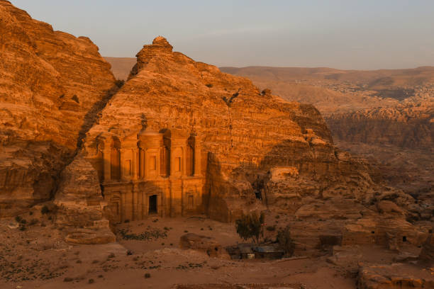

SEVEN WONDERS OF THE WORLD
Seven Wonders of the World capture the fancies of travellers and interest of historians alike. Built at different points in time, at different places, the new seven wonders of the world are the materializations of some great dreams, some great skills and some great labor; each being a masterpiece in itself. Several monuments have been built down the line, magnificent in their own right, and thereby resulting in a new list of 7 wonders of the world, while the Seven Wonders of the Ancient World continue to enchant the world. Enjoy a brief account of each of the new Seven Wonders
Taj Mahal

The Taj Mahal is a mausoleum of white marble built by the Mughal emperor, Shah Jahan, in the loving memory of his favorite wife, Mumtaz Mahal; the Taj Mahal is one of the wonders of the world that continues to hold an attraction for all through the globe. Twenty-thousand men labored on its construction, which began in 1631 and took 22 years to complete. It is a symbol of eternal love and is worth a visit, especially on a full moon night. It is aptly called the eighth wonder of the world.
Chichen Itza

The sacred Pre-Hispanic site of Chichen Itza (meaning near the edge of water) is an archeological marvel located in the eastern portion of the Yucatan state peninsula of Mexico. One of the largest Maya cities, the site was built by the Maya civilization's rulers between 750 AD and 900 AD. It houses several layered architectural complexes spread over an area of 5 sq. kms, with structures such as El Castillo, Temple of Warriors, The Great Ball Court, etc., made of fine stone and depicting the Maya-Toltec influences.
Christ the Redeemer

Every visitor in Rio de Janeiro has his faith in Christ redeemed, each time he views it. Such is the presence of the world's largest statue of Art Deco, that of Christ, the Redeemer. Giving shape to the idea mooted in 1921 by the church in Brazil, a colossal statue of Christ visible to all in Rio was envisioned. Built with refined concrete, it came up atop the 700 m-high Mount Corvocado in Brazil in 1931. Standing 30 m tall on a separate pedestal measuring 8 m, the magnificent statue was designed by Heitor da Silva Costa and sculpted by Polish-French Paul Landowski. Maintenance work has since been carried out regularly as the statue is exposed to strong winds and erosion. After the consecration of a chapel under the statue in October 2006 to the patron saint of Brazil, Catholics are now able to hold baptisms and weddings there.
Colosseum
Built in the ancient Mediterranean world, the iconic Roman Colosseum evokes images of the blood-thirsty cries of Roman spectators and gladiators playing the games at the Colosseum's amphitheater. The elliptical Colosseum was originally known as the Flavian Amphitheater. The Colosseum, one of the most imposing monuments located in central Rome, was built by Emperor Vespasian, who founded the Flavian dynasty. The construction began in 72 AD and was completed in 80 AD, an year after his death by his heir, Titus. A UNESCO World heritage site, it could hold about 50,000-80,000 spectators at a given time. After the early medieval era, hosting of the public gaming, entertainment such as music, operas and ballets based on classical mythology, famous battles, etc., was discontinued and later used only for workshops, and even as a Christian shrine. Currently, it is in partial ruins, devastated by earthquakes, but is partly used by the Church on occasions, as well as for music concerts by internationally renowned musicians.
Great Wall of China

Winding its way through the Liaoning, Jilin, Ningxia, Hunan, and several other provinces in China, stands the Great Wall of China, the world's largest structure built for military and defense purposes. Visible even from the surface of the moon, the Wall was built in 220 BC under Qin Shi Huang. Several sections of fortifications were brought together to form a united defense system against invaders from the north. Slowly, but surely the Great Wall measuring about 20,000 kms in length was fully constructed till the end of the Ming dynasty's rule from 1368-1644. Architecturally sound, the wall, which epitomizes human suffering and is sung of in many Chinese ballads, is of great strategic and historic importance to China.
Machu Picchu (Machu Pikchu)
/wide (2).jpg)
Nestled between the heights of the Peruvian Andes mountains and Amazon Basin, about 200 rock structures with a 2,400 m high citadel in the center are housed in the Machu Pikchu Region of Peru. Machu Picchu, as it is more popularly known, is the Inca empire's legacy and creation that can be found amidst pleasing natural surroundings of a tropical rainforest. The historic sanctuary structures consisting of ramps, giant walls, and terraces seem to be carved out naturally. Machu Picchu was built in the 15th century but abandoned later when Spaniards defeated the Inca empire in the 16th century. While at its peak, Machu Picchu was used as a major religious, learning, astronomical, and agricultural center; and now, it is a major tourist attraction in Peru.
Petra
The eye-catching half-built, half-carved 'Lost' city of Petra can be seen as a rock carving blended into the mountains between Red Sea and Dead Sea. Eastern as well as Hellenistic traditions can be seen as infused into the carvings. This famous archeological site of Petra is a part of the Ma'an Governorate, which is the largest among the 12 governorates of the Kingdom of Jordan. The heritage city was constructed in the first centuries of BC to AD with Nabataean rock temples, and tombs such as the Khasneh, the Urn Tomb, etc., and now stands testimony to the great civilizations of yore.
Great Pyramid of Giza (honorary status)

The Great Pyramid of Khufu (Cheops) was built by the pharaoh Khufu around 2,560 BC. It is 136 m high with each side measuring 229 m. Each side is oriented with the cardinal points of the compass, i.e. North, South, East and West. The sloping angle of the side is 51 degrees 51 minutes. The Pyramids of Giza are the only surviving Wonders of the Ancient World. It has now gained honorary status as a new wonder of the world continuing from the ancient seven wonders of the world.